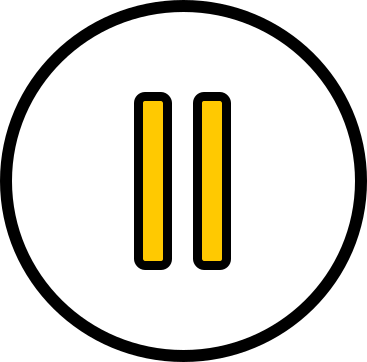

<!--The content below is only a placeholder and can be replaced.-->
<h4 id="size"><span>Music genre recognition</span><br />Record An Audio</h4>
<div class="circle"></div>

<div style="text-align:center">
  
    <div id="outerContainer">
        <div id="container">
            
          <div class="item">
            
            
          </div>
          <div class="circle1" *ngIf="enregistrement" style="animation-delay: 0s"></div>
          <div class="circle1" *ngIf="enregistrement" style="animation-delay: 1s"></div>
          <div class="circle1" *ngIf="enregistrement" style="animation-delay: 2s"></div>
          <div class="circle1" *ngIf="enregistrement" style="animation-delay: 3s"></div>
        </div>
    </div>      
      <p *ngIf="recording"></p> 
      <div class="clearfix"></div>
      <audio controls="" *ngIf="url && !recording">
          <source [src]="sanitize(this.url)" type="audio/wav">
      </audio>
      <h4 *ngIf="Musicgenre && url && !recording" class="capitalize">{{Musicgenre}}</h4>
</div>


  